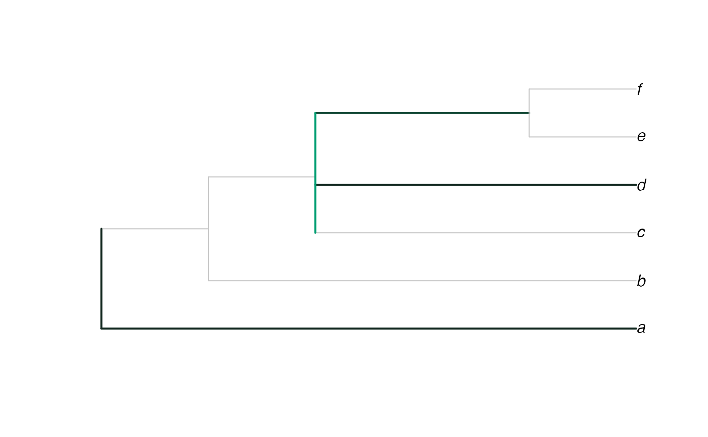

Plots a consensus of trees with a rogue taxon omitted, with edges coloured according to the proportion of trees in which the taxon attaches to that edge, after Klopfstein and Spasojevic (2019) .
Usage
RoguePlot(
trees,
tip,
p = 1,
plot = TRUE,
Palette = colorRampPalette(c(par("fg"), "#009E73"), space = "Lab"),
nullCol = rgb(colorRamp(unlist(par(c("fg", "bg"))), space = "Lab")(0.8)/255),
edgeLength = NULL,
thin = par("lwd"),
fat = thin + 1L,
outgroupTips,
sort = FALSE,
legend = "none",
legend.inset = 0,
...
)Arguments
- trees
List or
multiPhyloobject containing phylogenetic trees of classphyloto be summarized.- tip
Numeric or character identifying rogue leaf, in format accepted by
DropTip().- p
A numeric value between 0.5 and 1 giving the proportion for a clade to be represented in the consensus tree (see
Consensus()).- plot
Logical specifying whether to plot the tree.
- Palette
Function that takes a parameter
nand generates a colour palette withnentries.- nullCol
Colour to paint regions of the tree on which the rogue is never found.
- edgeLength
Numeric specifying edge lengths of consensus tree;
NULLaligns tips by scaling edges proportional to clade size;1sets all edges to unit length.- thin, fat
Numeric specifying width to plot edges if the rogue tip never / sometimes does attach to them.
- outgroupTips
Vector of type character, integer or logical, specifying the names or indices of the tips to include in the outgroup. If
outgroupTipsis a of type character, and a tree contains multiple tips with a matching label, the first will be used.- sort
Logical specifying whether to sort consensus tree using
SortTree().- legend
Character vector specifying position of legend (e.g.
"bottomleft"), or"none"to suppress legend. For fine-grained control of legend, usePlotTools::SpectrumLegend().- legend.inset
Numeric specifying fraction of plot width / height by which the legend's position should be inset.
- ...
Additional parameters to
plot.phylo().
Value
RoguePlot() invisibly returns a list whose elements are:
cons: The reduced consensus tree, sorted ifsort = TRUE, otherwise in preorder;onEdge: a vector of integers specifying the number of trees intreesin which the rogue leaf is attached to each edge in turn of the consensus tree;atNode: a vector of integers specifying the number of trees intreesin which the rogue leaf is attached to an edge collapsed into each node of the consensus tree.legendLabels: A character vector suggesting labels for a plot legend; suitable forPlotTools::SpectrumLegend(legend = x$legendLabels).
References
Klopfstein S, Spasojevic T (2019).
“Illustrating phylogenetic placement of fossils using RoguePlots: An example from ichneumonid parasitoid wasps (Hymenoptera, Ichneumonidae) and an extensive morphological matrix.”
PLOS ONE, 14(4), e0212942.
doi:10.1371/journal.pone.0212942
.
Smith MR (2022).
“Using information theory to detect rogue taxa and improve consensus trees.”
Systematic Biology, 71(5), 986–1008.
doi:10.1093/sysbio/syab099
.
See also
Other consensus tree functions:
Consensus(),
ConsensusWithout()
Examples
trees <- list(read.tree(text = "(a, (b, (c, (rogue, (d, (e, f))))));"),
read.tree(text = "(a, (b, (c, (rogue, (d, (e, f))))));"),
read.tree(text = "(a, (b, (c, (rogue, (d, (e, f))))));"),
read.tree(text = "(a, (b, (c, (rogue, (d, (e, f))))));"),
read.tree(text = "(rogue, (a, (b, (c, (d, (e, f))))));"),
read.tree(text = "((rogue, a), (b, (c, (d, (e, f)))));"),
read.tree(text = "(a, (b, ((c, d), (rogue, (e, f)))));"),
read.tree(text = "(a, (b, ((c, (rogue, d)), (e, f))));"),
read.tree(text = "(a, (b, (c, (d, (rogue, (e, f))))));"))
plotted <- RoguePlot(trees, "rogue", legend = "topleft", legend.inset = 0.02)
PlotTools::SpectrumLegend(
"bottomleft",
palette = colorRampPalette(c(par("fg"), "#009E73"), space = "Lab")(100),
legend = plotted$legendLabels,
cex = 0.4
)
